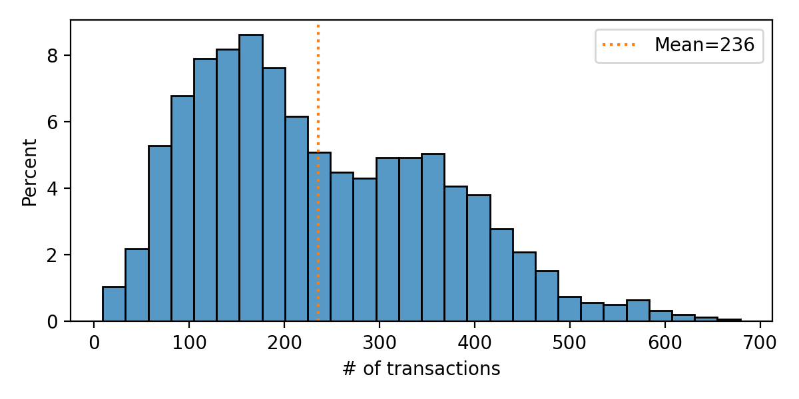

Created: 2022-10-19 Wed 12:54
Can we find behavioral or demographic clues to how likely people are to hold a loan?

| By gender | By district |
Gender has very little impact on total spending. Geography a bit more, but not strong.
LOAN?
If there is a clear difference in the distribution of people who do
and do not have loans, then the quantity is a good predictor of LOAN
The birthdate is best, but I do not quite understand why.
ACCOUNT_ID seems to the strongest predictor(This is probably not a real effect!)
ACCOUNT_IDBIRTH_DTMore work is needed! Thank your for your attention.